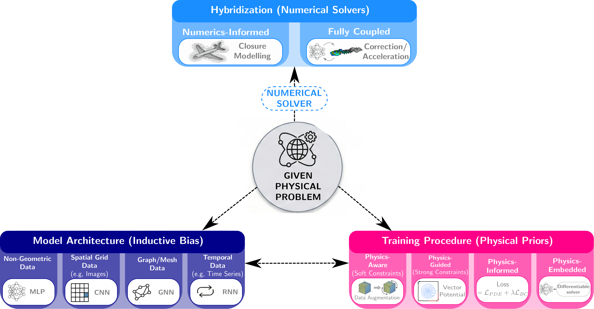

Projects
-
How to learn Physics: A Review of Scientific Machine Learning Scientific Machine Learning (SciML) is evolving at a rapid pace, with new methods and applications appearing every week. Keeping up with the field and building a clear, structured understanding can be challenging, especially for newcomers. This review provides an accessible introduction to SciML, a structured overview of the field and its main building blocks — from model architectures to training strategies — and practical insights into coupling SciML models with traditional numerical solvers. Whether you're getting started with SciML or looking for a comprehensive review, I hope this article will be useful. Paper · GitHub repository
